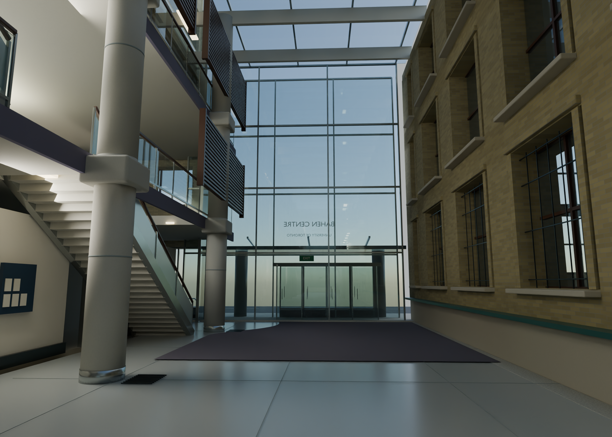
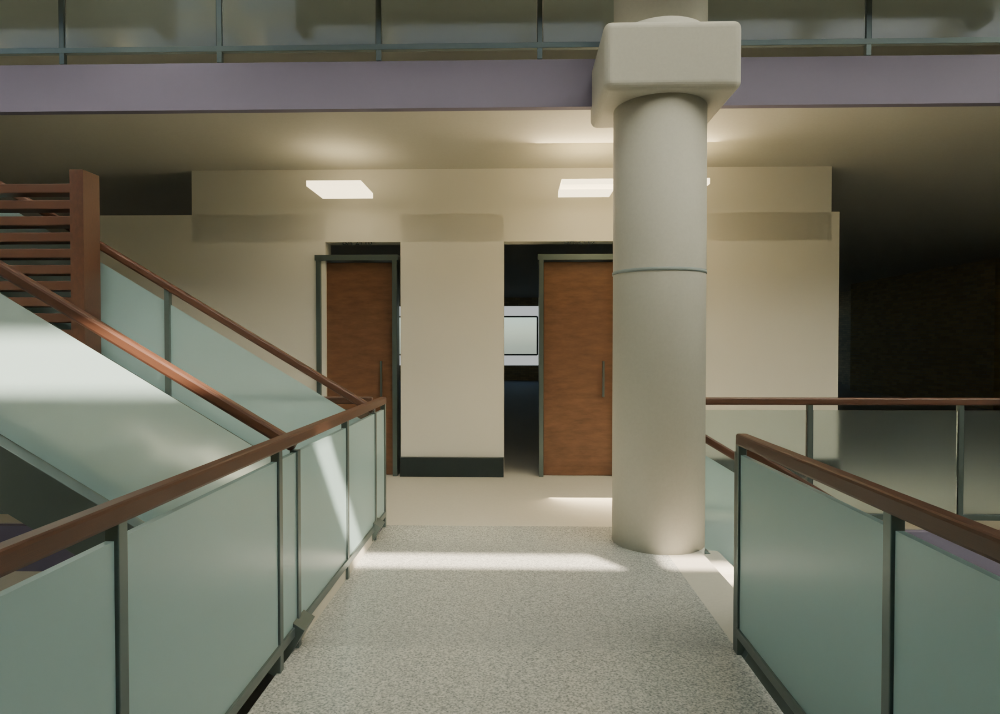
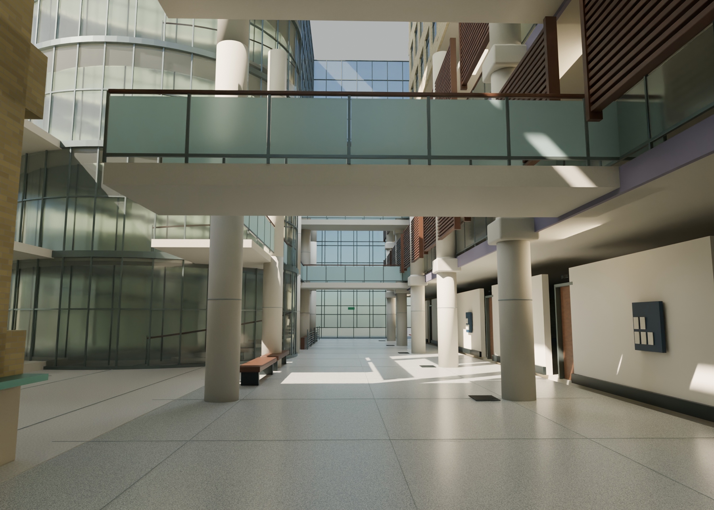
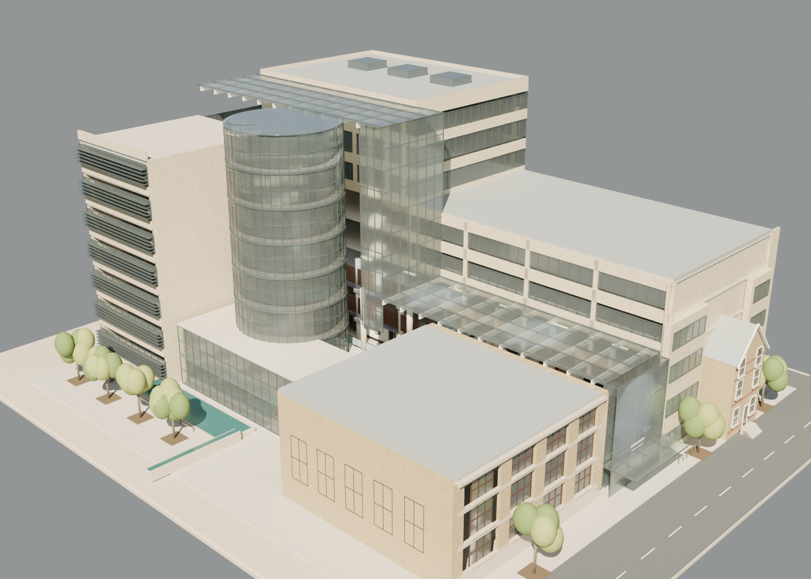
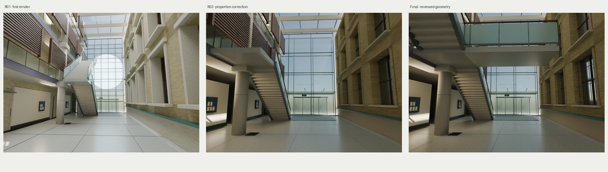

Explore the 3D model · Download the scene and source
Architectural approximation from public video previews and official university photographs. Exact 14:52 video footage was unavailable; dimensions and overall massing are inferred.





All images above are rendered from the delivered 3D geometry. These are not reference photographs.